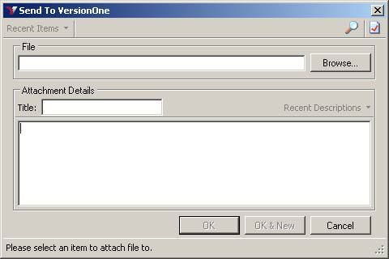
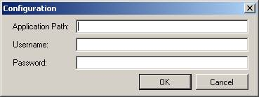
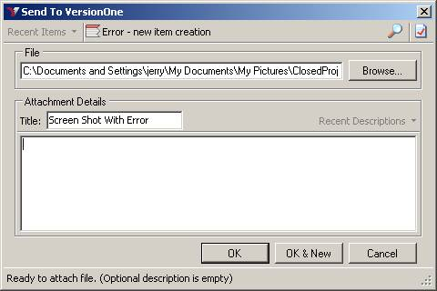
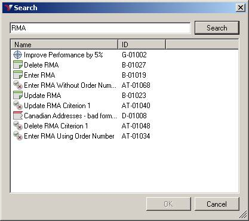
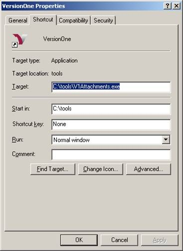
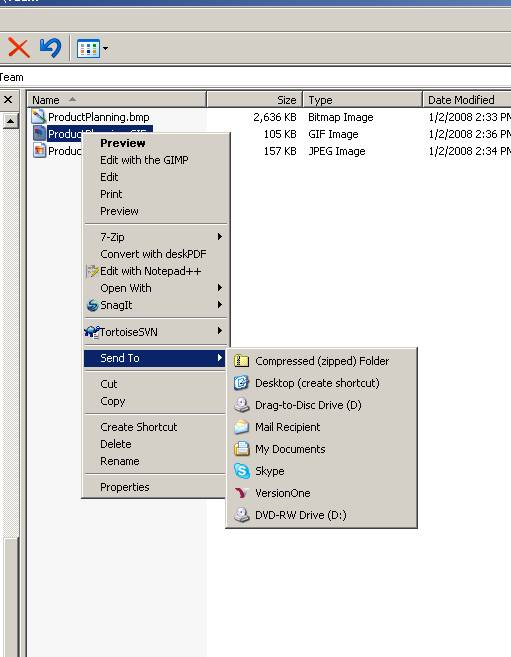

V1Attachments is a standalone utility that allows you to attach a file to any asset in VersionOne; this includes but is not limited to, a Story, Defect, Task, or Test. This utility can be used directly or you can create a shortcut in the appropriate Windows subdirectory to add VersionOne to the list of “Send To” options available on the right click menu.
To install V1Attachments, copy the executable, along with the supporting files [1] into a subdirectory on your computer. For the purpose of this document we assume the location is C:\tools. To test the install double click on V1Attachments.exe; you should see the following screen

Before using V1Attachments, you need to set the VersionOne system parameters. To accomplish this, click the Configuration icon located in the top right hand corner of the application window (below the close window icon). This will open the Configuration dialog shown below.

From this dialog, supply the following parameters:
|
Parameter |
Description |
|
Application Path |
URL to your VerionOne instance |
|
Username |
Your VersionOne user name |
|
Password |
Your VersionOne password |
Once configured, use the Browse button to locate the file you wish to attach. Once selected you can either use the search icon, or the “Recent Items” dropdown, to select the target VersionOne asset. Once the asset is selected, you need to provide a name for this attachment and optionally enter a description. Clicking Ok will cause the selected file to be uploaded and attached to the asset specified.

The following image shows the details page after the file was uploaded.
To use search click the magnifying glass icon located on the toolbar. This will open a search window that allows you to specify search terms. Entering a term in the textbox and clicking search will return the VersionOne assets containing that term.

To make it easier to attach files to VersionOne assets, you can add the V1Attachments utility to the list of available options on the Windows “Send To” menu. To accomplish this you need to create a shortcut in the “SendTo” directory. The “SendTo” subdirectory is a hidden subdirectory located under C:\Documents and Settings\{your Windows user id}\. The following image shows the property page for the V1Attachment shortcut named VersionOne.

With this Shortcut, VersionOne is now an option on my “Send To” menu, as illustrated below.

When I choose this option, V1Attachments is launched and all I need to do is choose the asset.
[1] Supporting files are VersionOne.SDK.dll and VersionOne.APIClient.dll. Once configured, you also need config.xml